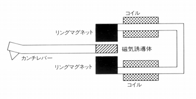
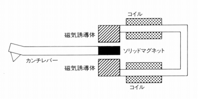
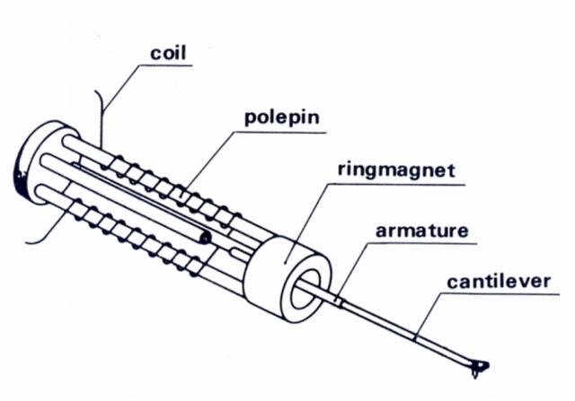
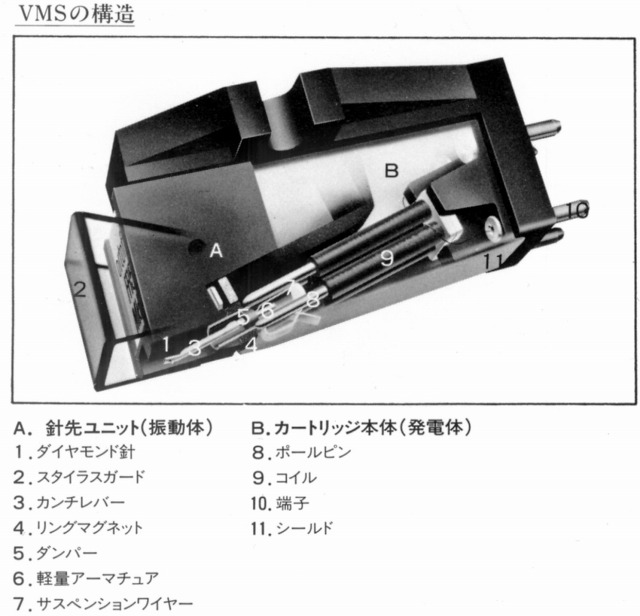

VMS型
オルトフォンが自社のMI型の一種についてつけた名称。VMSは（バリアブル・マグネティック・シャント）の頭文字を取ったもの。こうしたケースの常でMM型より優れているとしていたが、他のMI型、IM型のメーカーの多数と同様に、少なくとも国内では1980年代後半頃に姿を消した。オルトフォンでは日本法人である「オルトフォン ジャパン」移行時に姿を消した。


(オルトフォンのカタログにあった原理図。左がVMS型で右がMM型）

(VMS型の発電系構造図）

(VMS型カートリッジの内部構造図）